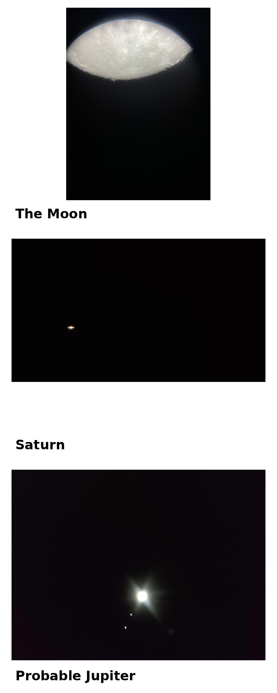
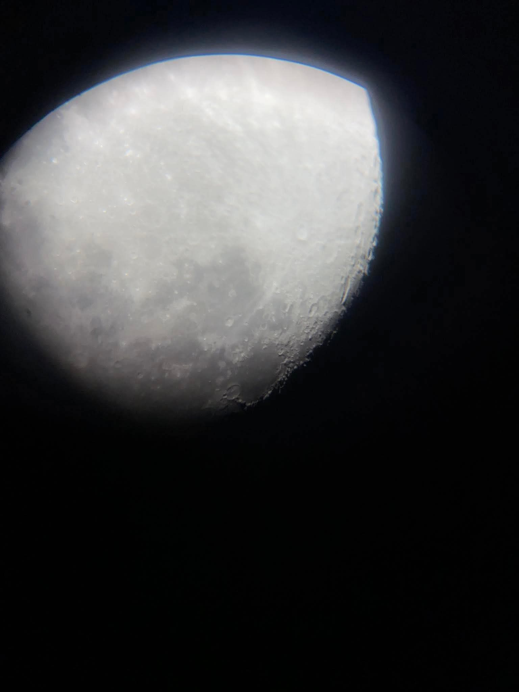
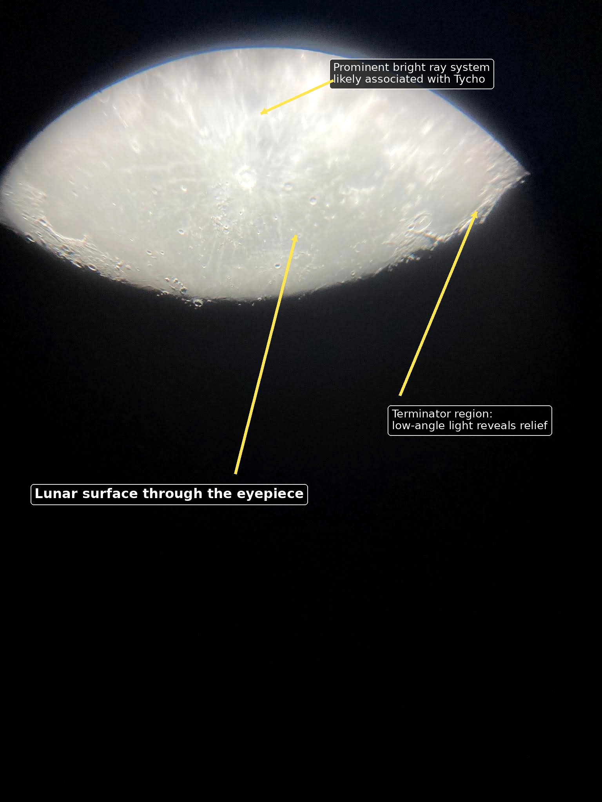
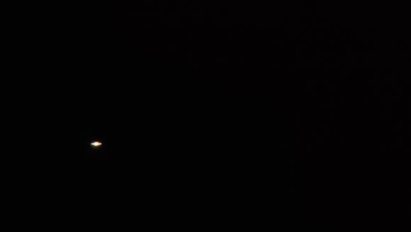
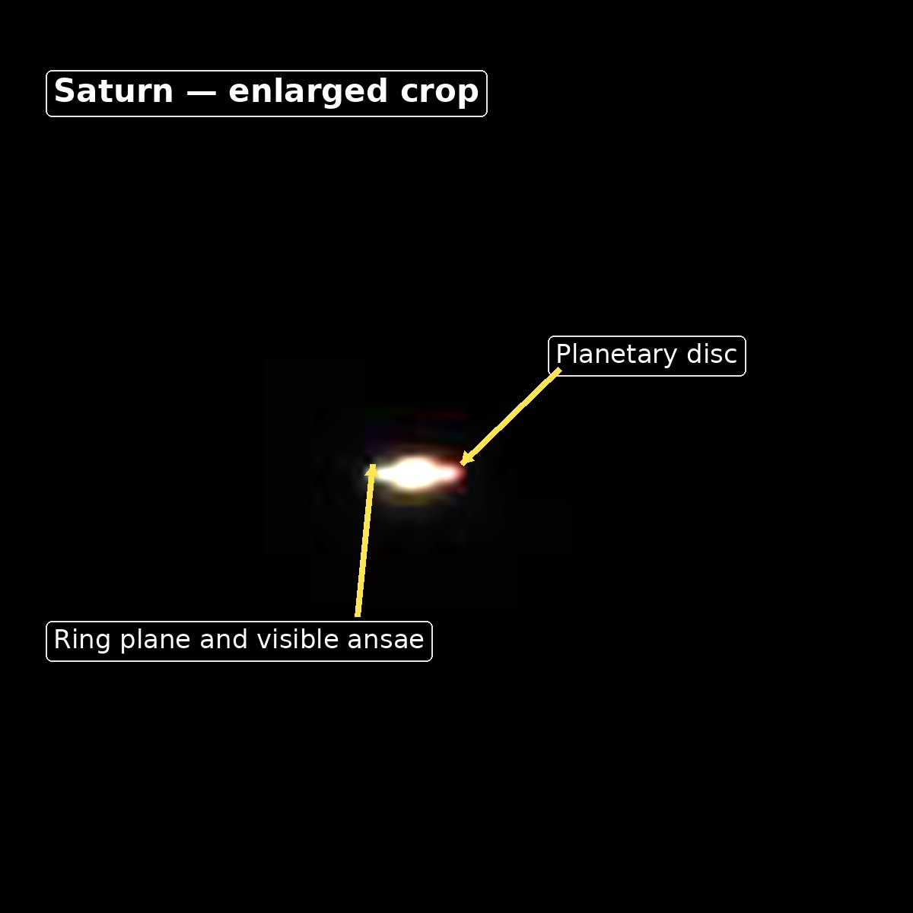
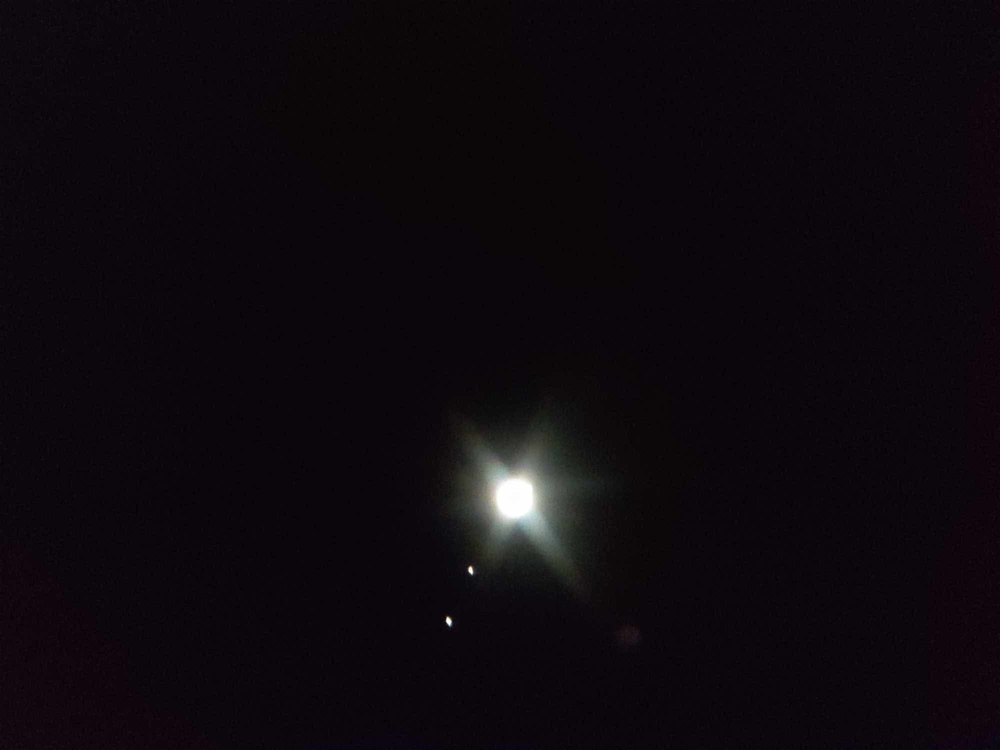
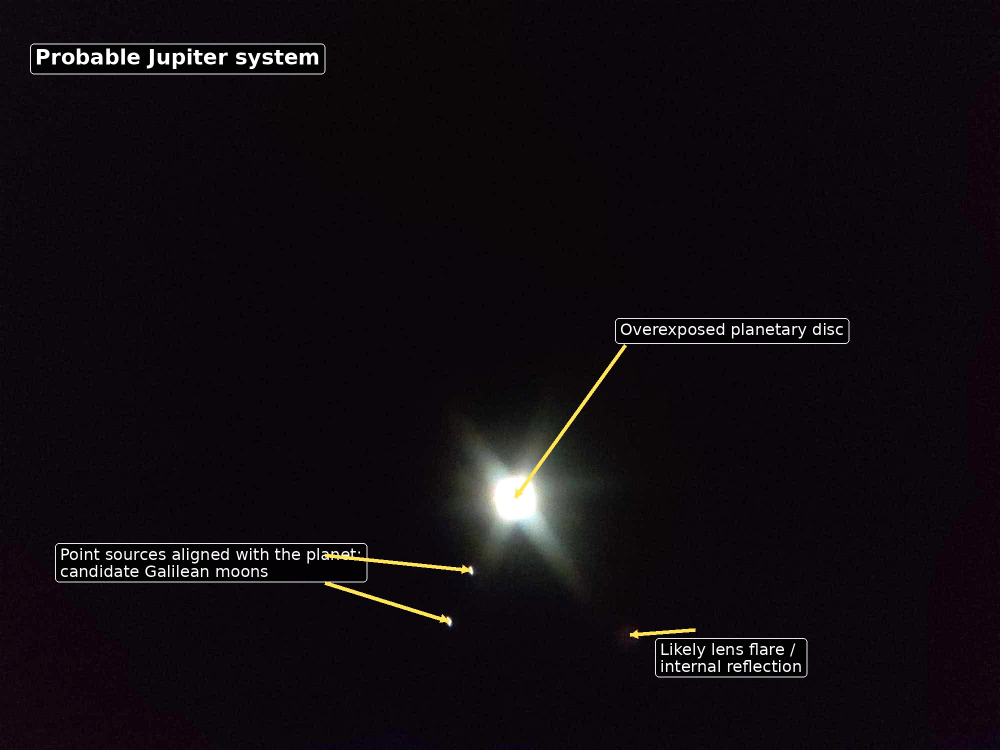

Abstract. A telescope does more than enlarge a distant object. It turns points of light into physical places: a cratered surface, a ring system and a planet surrounded by moving worlds of its own. This observing report examines seven photographs taken through a university telescope. The image set contains two views of the Moon, four frames that clearly show Saturn’s characteristic ringed silhouette and one probable observation of Jupiter with point-like objects that may be Galilean moons.

Identification and metadata note
The supplied JPEG files contain no usable EXIF timestamp, observing coordinates, telescope model, eyepiece information or camera settings. The Moon and Saturn identifications are secure from morphology. The final object is most consistent with Jupiter, but its exact identity—and the names of the nearby point sources—cannot be proven from the photographs alone.
1. Reading an Image Taken Through an Eyepiece
The circular field, dark vignetting, changing orientation and uneven illumination indicate that the camera was positioned at or near the telescope eyepiece. This is commonly called afocal or eyepiece-projection smartphone photography. NASA notes that a phone can capture the Moon and planets simply by being aligned with a telescope eyepiece, although a stable adapter makes alignment and focusing much easier.
These images also preserve the practical character of visual astronomy. The frame is not a spacecraft mosaic or a heavily stacked planetary portrait. It records what an observer actually encounters: a narrow exit pupil, atmospheric movement, difficult focus and an enormous contrast difference between a bright planet and the black sky.
| Files | Identification | Confidence | Visual evidence |
|---|---|---|---|
image00002, image00003 |
The Moon | Confirmed | Resolved lunar disc, craters, bright ray structures and rugged relief. |
image00001, image00004,
image00005, image00006
|
Saturn | High | An extended ring plane is visible on both sides of the planetary disc. |
image00007 |
Probable Jupiter | Moderate | A very bright planetary source with two nearby point sources arranged along a common line, consistent with a telescopic Jovian view. |
2. The Moon: Light, Shadow and Geological Relief

The Moon is the most detailed object in the set because it is both close and physically large in the sky. The photographs resolve crater rims, irregular terrain and broad tonal differences across the surface. The rough boundary between strongly illuminated terrain and darkness is especially valuable. Near this boundary—the terminator—the Sun lies low over the local lunar horizon, allowing crater walls and mountain ridges to cast long shadows.
NASA recommends concentrating on the terminator because shadows make relief easier to distinguish. The same effect is visible here: structures near the illuminated edge appear sharper and more three-dimensional than regions under nearly overhead sunlight.

One frame contains a prominent bright ray pattern. Its morphology and position within the visible lunar terrain are consistent with Tycho, one of the Moon’s best-known young impact craters. NASA describes Tycho as a bright feature in the southern highlands whose ejecta rays stretch across a large part of the lunar near side. Telescope inversion and phone rotation can move such a feature to an unfamiliar part of the frame, which is why a raw eyepiece photograph should not be interpreted using “up” and “down” alone.
3. Saturn: A Ring System Resolved from Earth

Saturn is the clearest planetary identification in the archive. Even at modest image scale, the object is not circular: material extends to both sides of the brighter central disc. These extensions are the two visible ends, or ansae, of the ring system. The sequence of four Saturn frames also shows how much a telescopic planetary image can change from one moment to the next.

Saturn’s rings are physically thin but extremely broad. From Earth, their apparent opening changes as the viewing geometry changes. In these photographs the ring plane is visible as a narrow, bright extension across the planet. Individual structures such as the Cassini Division are not reliably resolved, but the defining planetary architecture is unmistakable.
Why the Saturn frames look different
Atmospheric seeing, small changes in focus, hand movement, phone-to-eyepiece alignment and automatic exposure can alter the apparent shape within seconds. Recording a short video and combining the sharpest frames would preserve more detail than relying on a single handheld exposure.
4. A Probable View of Jupiter and Its Moons

The last photograph contains the most interesting uncertainty. The central object is strongly overexposed, erasing any atmospheric bands or disc detail that could provide a direct identification. Two small white points remain visible below it and lie close to a common axis through the planet. This geometry is consistent with Jupiter and a subset of its four bright Galilean moons.
Galileo famously recognised that several “stars” near Jupiter changed position and were actually moons orbiting the planet. Modern small telescopes reproduce this historic observation easily. NASA identifies the four largest Jovian satellites as Io, Europa, Ganymede and Callisto. However, assigning those names to the individual points in this image would require the exact date, time, observing location, image orientation and preferably an ephemeris comparison.

5. What the Camera Adds—and What It Hides
A visual observer can continuously adjust their eye to brightness and wait for brief moments of stable atmosphere. A phone camera makes a different set of decisions. It may raise exposure to reveal the dark field, saturating the planet in the process. It may hunt for focus, apply sharpening and noise reduction, or introduce coloured fringes around a bright edge. The result is not simply “what the telescope saw”; it is the combined output of the atmosphere, telescope, eyepiece, alignment, sensor and computational image pipeline.
Several artifacts are visible in the archive:
- Vignetting: dark regions caused by the phone lens not being perfectly centred over the eyepiece’s exit pupil.
- Saturation: loss of detail in the brightest lunar and planetary regions because pixel values reached their maximum.
- Chromatic fringing: blue or coloured edges created by optics, alignment and phone processing around high-contrast boundaries.
- Internal reflections: displaced coloured spots or streaks caused by bright light reflecting inside the phone lens or eyepiece.
- Seeing blur: rapid distortion produced as light passes through moving layers of Earth’s atmosphere.
6. A Better Capture Workflow for the Next Session
The next observation can retain considerably more scientific value without requiring a specialised astronomy camera. The most important improvement is not magnification but repeatability.
- Mount the phone securely and centre its camera over the eyepiece.
- Lock focus and exposure instead of allowing automatic adjustments between frames.
- Reduce exposure for the Moon and planets until bright regions retain texture.
- Record short videos and later select or stack the sharpest frames.
- Preserve the original files before applying enhancement or social-media compression.
- Record the date, exact local time, location, telescope, eyepiece, magnification and camera model.
- Take a second wider exposure for planetary moons and a shorter exposure for the planetary disc, since both cannot always be captured optimally at once.
The most valuable missing measurement
A timestamp would allow the probable Jupiter frame to be compared against a planetary ephemeris. That single piece of information could confirm the target, determine which Galilean moons were visible and establish the orientation of the image.
7. Conclusion
These photographs are technically imperfect in exactly the way first telescope observations are valuable. They preserve the moment when astronomical objects stop being textbook diagrams and become direct observations. The Moon becomes a landscape shaped by impacts and grazing sunlight. Saturn becomes a planet physically encircled by a ring system. A bright point beside smaller points becomes a possible miniature planetary system.
The archive also demonstrates an important scientific habit: observation and interpretation must remain separate. Some identifications are certain, others are strongly supported, and one remains provisional because essential metadata is missing. Treating that uncertainty openly does not weaken the observation. It turns a set of photographs into a more careful and reproducible record of the night sky.
References
- NASA Science. “Lunar Photography Guide.” science.nasa.gov/moon/photography-guide.
- NASA Science. “Moon Viewing Tips.” science.nasa.gov/moon/viewing-tips.
- NASA Science. “Tycho Crater on the Moon.” science.nasa.gov/resource/tycho-crater-on-the-moon-labeled.
- NASA Science. “Saturn’s Rings.” science.nasa.gov/photojournal/saturns-rings.
- NASA Science. “Jupiter Moons.” science.nasa.gov/jupiter/jupiter-moons.
- NASA Science. “Galileo’s Observations of the Moon, Jupiter, Venus and the Sun.” science.nasa.gov/solar-system/galileos-observations.